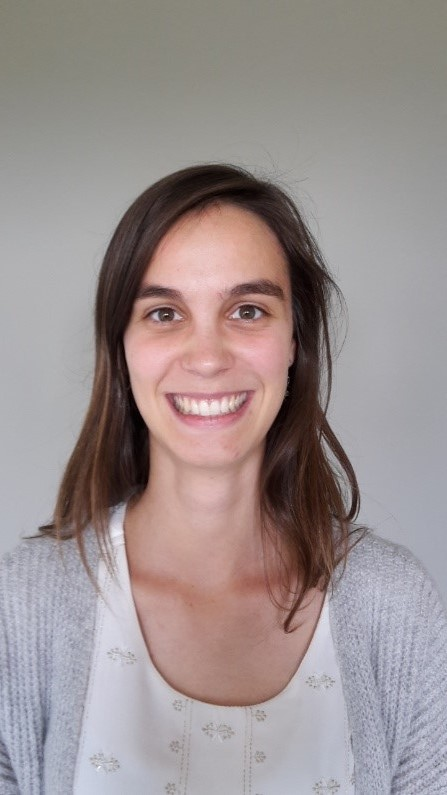

Over ons
Logo.Praxis is een groepspraktijk logopedie die sinds 2016 werd overgenomen door Mieke Van Cauwenberghe. Wij werken samen in teamverband en dat biedt verschillende voordelen:
- Elk heeft een eigen specialisatie
- Wij kunnen expertises uitwisselen
- Er is continuïteit van therapie mogelijk tijdens vakanties
Ondanks het belang van teamwork, kiezen we wel voor een stabiele één-op-één relatie tussen patiënt en therapeut. Zo kunnen wij de beste opvolging en resultaten garanderen.
Mieke Van Cauwenberghe

Mieke behaalde in 2013 haar Master Science in de logopedische en audiologische Wetenschappen aan de UGent met grote onderscheiding. Zij begon toen te werken bij Logo.Praxis in samenwerking met Tanja Beeckman.
Ze volgde een postgraduaat “Opleiding Parkinsonzorg”. Met haar eindwerk “Vergelijkende studie tussen akoestische en perceptuele spraakparameters bij personen met en zonder de ziekte van Parkinson” behaalde ze de eerste prijs van de opleiding. Ze volgde ook reeds een studiedag rond “Ouderbegeleiding”, waarbij een theoretisch en praktisch kader werd geschetst rond het aanleren van strategieën om als ouder met doelgerichte interventies de logopedische behandeling van het kind te kunnen ondersteunen en efficiënter maken. Vanaf heden zal deze workshop ook in de praktijk aangeboden worden.
Sinds 2016 heeft Mieke de praktijk overgenomen en werkt ze samen met Lise Van Havermaet.
Lise Van Havermaet
Lise behaalde in 2016 haar Master Science in de logopedische en audiologische wetenschappen aan de UGent met onderscheiding. Ze startte in 2016 met werken bij Logo.Praxis. Ze volgde toen ook de opleiding “Specifieke lerarenopleiding” aan de UGent en slaagde met glans in 2017. Ze is dus helemaal thuis in de onderwijswereld. Momenteel volgt ze ook nog een postgraduaat “Meertaligheid” aan de Thomas More hogeschool om anderstalige nieuwkomers zo goed mogelijk te kunnen helpen.